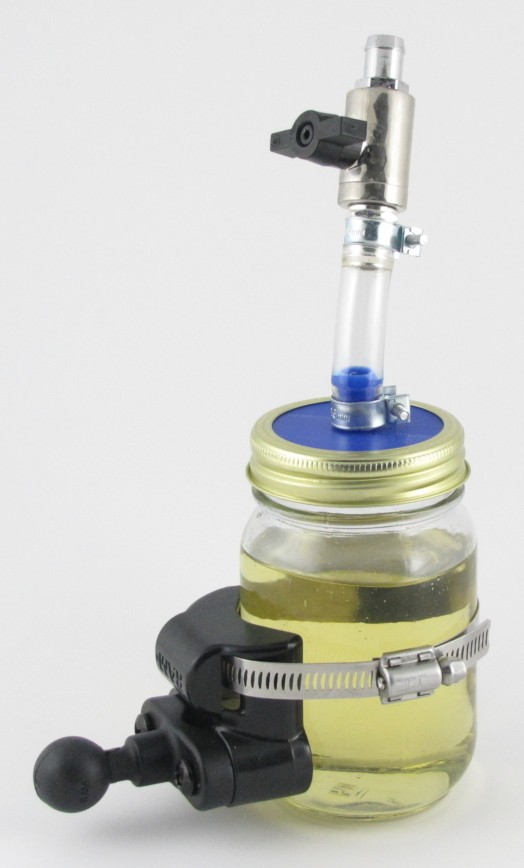
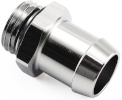

EK-AF ball valve (10mm) G1/4"
XSPC G1/4" to 1/2" barb fitting
2 required
Do not get the "stubby" style fitting
I do all the maintenance on my bikes by myself, so I need to be a little creative when it comes to replacing brake and clutch fluid, as this is usually a two-person job.
For the caliper end of things, I use Stahlbus bleeder valves. These are superior to SpeedBleeders, and worth the price. (see discussion below)
For the master cylinder end, I created a cheap brake fluid supply bottle out of a pint Mason canning jar and $30 in computer water-cooling parts. It has a valve to open and close it.
To hold it in place, I use RAM Mount hardware, as it's flexible enough to fit anywhere on any bike, and I already have a ton of it.
I've used pressure bleeders and other equipment, but this is the simplest and cleanest method I've used so far.
I've used commercial supply bottles, but they're all designed for cars and don't attach well to the master cylinder, and the valves are usually very poor quality. They end up leaking fluid everywhere, and make more of a mess and hassle than they save.
The 3D-printed lid gets rid of a leaky O-ring seal, and is far sturdier than the standard thin sheet-metal lid.
Right-click and save the brake_fluid_lid_nozzle.stl file for slicing and printing.
I used PETG filament on an original Prusa i3 MK3 printer. Don't use PLA or ABS since they aren't compatible with brake fluid.

I bought mine from Performance PCs so I will use their prices and part numbers. Except for the ball valve, they're generic parts.
|
EK-AF-BV-10-G14-NK ($19) EK-AF ball valve (10mm) G1/4" |
|  |
XSPC-BBSP1412 ($3) XSPC G1/4" to 1/2" barb fitting 2 required Do not get the "stubby" style fitting |
If you're not going to use the 3D-printed lid, you will also need the following part, plus another barb fitting:
|
XSPC-G14-BULK-SL ($5) XSPC G1/4" to G1/4" bulkhead fitting |
To install this fitting in the standard sheet-metal jar lid:
 SAE #15 14mm-16mm automotive fuel-injection hose clamps - 2 required.
SAE #15 14mm-16mm automotive fuel-injection hose clamps - 2 required.
 The claw on the passenger peg.
The claw on the passenger peg. The glare shield clamp on the passenger peg frame rail.
The glare shield clamp on the passenger peg frame rail. Using the glare shield clamp.
Using the glare shield clamp.
SpeedBleeders are brake bleeder nipples with spring-loaded one-way check-valve balls. They're a nice idea.
The problem is when you loosen them to release the check-valves, fluid leaks out and air is sucked in past the threads where they screw into the caliper.
You can work around this by smearing grease around the threads or other methods, but it's still kind of a mess.
With Stahlbus bleeders, the nipple with the check-valve screws into an O-ring sealed chamber, which then screws solidly into the caliper. No leaks.
Another advantage of the design is that you can control how loose the valve is, and how easily it passes fluid. You can even loosen them enough to fill the system through the bleeders.